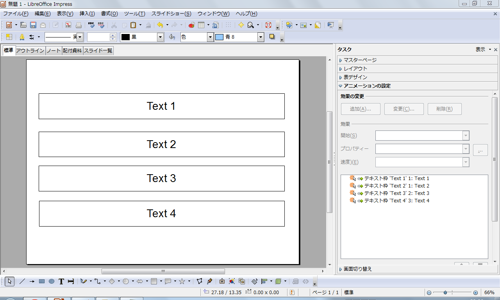

OOoの小枝(Impress編)
【 目次 】
1)アニメーション効果で文字列を一行ずつ表示する
1)「アニメーションの効果」を選択する
2)入力したテキストを選択する
3)「効果」として"スライドイン"を設定
4)「方向」の<...>ボタン(効果オプション)をクリック
5)テキストアニメーションタブを選択
6)「グループテキスト」で"第１レベルの段落ごと"を選択する
2)テンプレートを追加する
1) [ファイル(F)]->[ドキュメントテンプレート(T)]->[管理(O)]
2)「ドキュメントテンプレートの管理」ダイアログボックスが表示されたら、"プレゼンテーション背景"フォルダをクリック
3) [コマンド]->[テンプレートのインポート(A)]
4)「ファイルを開く」ダイアログボックスが表示されたら、ダウンロードしたテンプレートファイルを選択し、<開く>ボタンをクリック
5) <閉じる>ボタンをクリック
3)配布資料を印刷する。
1)配布資料タブを選択
2)ファイル→印刷ダイアログを開きます。
3)「内容」欄のチェックを「配付資料」にする。勿論ページごとのスライドは6にします。
4)再生できるビデオとサウンドのfile形式
・AIF Audio
・AU Audio
・AVI
・CD Audio
・MIDI Audio
・MPEG Audio
・MPEG Video
・Ogg bitstream
・Quicktime Video
・Vivo Video
・WAVE Audio
5)Impressの画面構成
[標準]モード
スライドを作成するときに使う基本的な表示モードです。Impress を起動したときはこのモードで表示されます。
1. 他のモードから[標準]モードに切り替えるときは、画面上部の[標準]タブをクリックします。
2. 画面は左部の[スライド]パネル、中央部の作業領域、右部の[作業]パネルで構成されています。
[アウトライン]モード
タイトルや箇条書きなど、スライドに含まれる文字列のみを表示するモードです。誤字・脱字のチェックが簡単に行えるほか、文字が階層的に表示されるためプレゼンテーション全体の構成を確認することができます。
1. 他のモードから[アウトライン]モードに切り替えるときは、画面上部の[アウトライン]タブをクリックします。
2. 画面は左部の[スライド]パネル、右部の作業領域で構成されています。
3. 作業領域で、文字列を編集することができます。
[ノート]モード
発表者が発表時に見る資料を作成するためのモードです。ノート部分には、聴衆に見せるスライドには記載しない解説内容やメモを入力しておくことができ、発表時のコメントの備忘録として利用することができます。
1. 他のモードから[ノート]モードに切り替えるときは、画面上部の[ノート]タブをクリックします。
2. 画面は左部の[スライド]パネル、中央部の作業領域、右部の[作業]パネルで構成されています。
3. 作業領域のノート記入部分に発表用のノートを記入することができます。
[配布資料]モード
配付資料を作成する際に確認用として表示するモードであり、１枚の用紙に複数ページのデータをまとめて表示・印刷することができます。
印刷時の設定については「各モードのデータを印刷する（24 ページ）」を参照してください。
他のモードから[配布資料]モードに切り替えるときは、画面上部の[配布資料]タブをクリックします。
1. 画面は左部の作業領域、右部の[作業]パネルで構成されています。
[スライド一覧]モード
スライドの各ページを縮小表示するモードです。プレゼンテーション全体の流れを把握することができます。
印刷時の設定については「各モードのデータを印刷する」を参照してください。
1. 他のモードから[スライド一覧]モードに切り替えるときは、画面上部の[スライド一覧]タブをクリックします。
2. 画面は左部の作業領域、右部の[作業]パネルで構成されています。
6)スライドを削除する。
プレゼンテーションを作成する過程で不要なスライドが出てきたら、そのスライドを削除します。
1. [スライド]パネルで削除したいスライドをクリックします。
2. [Delete]キーを押します。
3. スライドを削除するとスライドの順番はその分だけ詰められます。
複数のスライドを一度に削除する場合は、[Ctrl]キーを押しながらスライドをクリックし、その後[Delete]キーを押します。
7)スライド名を変更する。
スライドの名前をわかりやすいものに変更しておけば、スライドショーの時などに操作しやすくなります。
1. [スライド]パネルで名前を変更したいスライドを右クリックします。
2. 表示されたメニューで[スライドの名前変更]をクリックします。
3. [スライド名の変更]ダイアログが表示されます。
4. 新しい名前を入力します。
5. [OK]をクリックします。
6. 右下に表示されていたスライド名が変更されます。
8)文字のフォントを調節する
画面や紙面に表示される書体のデータを「フォント」と呼びます。テキスト枠に入力された文字のフォントを調節する方法を解説します。
1. フォントを変更したい文字列を選択します。
☆ Tips ☆テキスト枠の中の全ての文字のフォントを一度に変更したいときは、テキスト枠をクリックします。
2. メニューバーの[書式]をクリックします。
3. [文字]をクリックします。
4. [文字]ダイアログが表示されます。
5. 英数字用のフォントと日本語用のフォントが別々に選択できます。スタイルやサイズを変更します。
6. 文字のフォントが変更されます。
9)箇条書きを入力する
スライドの文字は、一般的には文章よりも箇条書きで入力されます。箇条書きで項目を列記しておいて、発表時に説明を補足します。
1. [作業]パネルの[レイアウト]で「タイトル・テキスト」など、箇条書きのテキスト枠があるレイアウトをクリックします。
2. [クリックしてアウトラインの挿入]と表示されているテキスト枠の中をクリックします。
3. テキストを入力し、[Enter]キーを押します。
4. 次の箇条書きを入力できるようになります。
10)箇条書きのレベルを変更する
箇条書きにはレベルを設定できます。レベルを設定すると、階層別に表示することができて見やすくなります。つまり「・」付から次の階層の「-」等に変更できる。
1. レベルを変更したい箇条書きの項目をクリックします。
2. レベルを上げる場合はツールバーの「<=」ボタンを、下げる場合は「⇒」ボタンをクリックします。
3. レベルが変更されます。
☆ Tips ☆箇条書きの先頭をクリックして[Tab]キーを押すと箇条書きのレベルが下がり、[Shift]+[Tab]キーを押すと箇条書きのレベルが上がります。
11)箇条書きのスタイルを変更する
箇条書きのスタイルを変更することもできます。つまり箇条書きが「・」である中で1項目のみ「☆」に変えたい時に使う。見やすいスライドになるように使い分けましょう。
1. スタイルを変更したい箇条書きの項目をクリックします。
2. メニューバーの[書式]をクリックします。
3. [箇条書きと番号付け]をクリックします。
4. [箇条書きと番号付け]ダイアログが表示されます。
5. 好きなスタイルをクリックし、[OK]をクリックします。
6. 箇条書きのスタイルが変更されます。
12)スライド１枚の箇条書き全てのスタイルを変更する
1. スライドのテキスト枠を選択し、四隅及び四辺中央の8箇所に「■」マークを表示させる。
2. メニューバーの[書式]をクリックします。
3. [箇条書きと番号付け]をクリックします。
4. [箇条書きと番号付け]ダイアログが表示されます。
5. 好きなスタイルをクリックし、[OK]をクリックします。
6. 箇条書きのスタイルが変更されます。
13)全スライドの箇条書きのスタイルを一度に変更する。
1. 任意の箇条書きスライドページをクリック
2. メニューバーの「挿入」
3. 「スタイルと書式設定」を選択
4. 「スタイルと書式設定」Windowにて「アウトライン1」を選択（階層が2番目なら「アウトライン2」)
5. マウスの右ボタンを押すと「変更」と表示されるので、「変更」を選択
6. アウトライン１Windowの中の「図」タブを選択
7. 変更するインテンドを選択
8. 見た目は変化無いがPre-View等で確認すると変わっている。
14)テキスト枠内の文字の配置を変更する
1. テキストの位置を変更したいテキスト枠をクリックします。
2. メニューバーの[書式]をクリックします。
3. [テキスト]をクリックします。
4. [テキスト]ダイアログが表示されます。
5. [枠からの間隔]や[テキストのアンカー]で文字列の表示位置を指定します。
6. [OK]をクリックします。
7. 文字列の位置が変更されます。
15)テキスト枠内の行間を変更する
1. 行間を変更したいテキスト枠をクリックします。
2. [段落]ダイアログが表示されます。
3. 行間を選択します。
4. [OK]をクリックします。
5. 行間が変更されます。
16)全てのスライドの書式を変更する
プレゼンテーション内の全てのスライドの書式を一度に変更する方法です。文字のスタイルや配置、行間隔やタブの設定までを以下の方法で設定することができます。ここでは、全てのスライドの「タイトル」の書式を変更する方法を解説します。
1. メニューバーの[書式]をクリックします。
2. [スタイルと書式]をクリックします。
3. [スタイルと書式]ダイアログが表示されます。
4. [タイトル]を右クリックします。
5. [変更]をクリックします。
6. 書式設定のダイアログが表示されます。
7. タブを切り替えることで、様々な書式を設定できます。
8. 書式を選択し、[OK]をクリックします。
9. 全てのスライドのタイトルの書式が変更されます。
17)ルーラを表示する
タブやインデントの設定をする際には、「ルーラ」と呼ばれる目盛り線を表示しておきます。
1. メニューバーの[表示]をクリックします。
2. [ルーラ]をクリックします。
3. ルーラが表示されます。
18)文字列のスペルチェックを行う
1. 間違いのある単語は赤色の破線が表示されます。
2. 単語の上で右クリックすると、修正候補が表示されます。
3. 修正候補の中から正しい単語を選択します。
4. 単語が修正されます。
19)類義語辞典を活用する
英単語の類義語を検索することも可能です。残念ながら、日本語には対応していません。
1. メニューバーの[ツール]→[言語]→[類義語辞典]をクリックします。
2. 類義語辞典が表示されます。
3. 適当な類義語があれば、一覧の中から選びます。
4. [OK]をクリックすると、文字列が類義語に置き換えられます。
20)画像挿入用のレイアウトを使う
スライドの内容の主となる部分に画像を使用することがあらかじめわかっている場合は、画像を挿入することのできるレイアウトを活用しましょう。
1. [クリップアート]を含むレイアウトのスライドを用意しておきます。
2. 「ダブルクリックで図の挿入」と書いてある枠内をダブルクリックします。
3. [画像の挿入]ダイアログが表示されます。
4. 挿入したい画像を選択します。
5. [開く]をクリックします。
6. スライドに画像が挿入されます。
21)既存のスライドに画像を挿入する
既にあるスライドの任意の場所に画像を挿入することもできます。
1. メニューバーの[挿入]をクリックします。
2. [画像]にマウスカーソルを合わせます。
3. [ファイルから]をクリックします。
4. [画像の挿入]ダイアログが表示されます。
5. 挿入したい画像を選択します。
6. [開く]をクリックします。
7. 画像が挿入されます。
8. 画像のサイズや位置を調整します。
22)全てのスライドに共通の画像を挿入する
会社のロゴマークなど、全てのスライドの同じ場所に同じ画像を挿入することもできます。なお、スライドのデザインを統一することで実現することもできます。
1. メニューバーの[表示]をクリックします。
2. [マスター]にマウスカーソルを合わせます。
3. [スライドマスター]をクリックします。
4. スライドマスターが表示されます。ここで全スライドの書式の共通設定ができます。
5. スライドマスターに画像を挿入します。
6. [マスター表示]ツールバーの[マスター表示を閉じる]をクリックします。
7. 全てのスライドの同じ位置に同じ画像が挿入されます。
23)画像を加工する
挿入された画像の色合いやコントラストなどを調節することもできます。また、必要な部分だけを切り取って表示（トリミング）することもできます。
画像を加工する場合は、[画像]ツールバーを使用します。
ツールバーが表示されていないときは、メニューバーの[表示]→[ツールバー]で[画像]にチェックを入れます。
24)色合い、明るさ、コントラスト、ガンマ値などを調整する
1. ツールバーの[色]ボタンをクリックします。
2. 色調整用のダイアログが開きます。
3. それぞれの数字を調整します。
25)画像のトリミング（切り出し）を行う
1. ツールバーの[トリミング]ボタンをクリックします。
2. [トリミング]ダイアログが表示されます。
3. どの範囲をトリミングするか。必要情報を入力します。
4. [OK]をクリックします。
26)画像に影をつける
画像に影をつけることで、簡単に見栄えの良いスライドになることもあります。
1. ツールバーの[トリミング]ボタンをクリックします。
2. 画像に影がつきます。
27)画像を透過する
1. ツールバーの[透過]で、透過する割合を数値で入力する。
2. 画像が透過します。
28)編集した画像を保存する
Impress で編集した画像を保存することもできます。
1. 画像を右クリックします。
2. 表示されたメニューで、[図として保存]をクリックします。
29)全てのスライドに共通の図形を挿入する
背景に図形を使用する場合など、全てのスライドの同じ場所に同じ図形を挿入することもできます。
1)メニューバーの[表示]をクリックします。
2)[マスター]にマウスカーソルを合わせます。
3)[スライドマスター]をクリックします。
4)スライドマスターが表示されます。ここで全スライドの書式の共通設定ができます。
5)スライドマスターに図形を挿入します。
6)[マスター表示]ツールバーの[マスター表示を閉じる]をクリックします。
7)全てのスライドの同じ位置に同じ画像が挿入されます。
30)図形の線を変更する
図形の枠線の変更方法です。
1)枠線を変更したい図形を選択します。
2)メニューバーの[書式]をクリックします。
3)[線]をクリックします。
4)[線]ダイアログが表示されます。
5)線のスタイルや色などを選択します。
6)[OK]をクリックします。
7)図形の線が変更されます。
31)図形の表面の色を変更する
1)色を変更したい図形を選択します。
2)メニューバーの[書式]をクリックします。
3)[表面]をクリックします。
4)[表面]タブの[塗りつぶし]で色を選択します。
5)色だけでなく、ビットマップの模様やグラデーションを指定することもできます。
6)色が決定したら、[OK]をクリックします。
7)図形の表面の色が変更されます。
32)図形を回転させる
図形の傾きを変える方法です。
1)傾きを変えたい図形を選択します。
2)メニューバーの[書式]をクリックします。
3)[位置とサイズ]をクリックします。
4)[位置とサイズ]ダイアログが表示されます。
5)[回転]タブの[回転ポイント]で回転の中心点を決定します。
6)[回転度]で回転角度を決定します。
7)[OK]をクリックします。
8)図形の傾きが変更されます。
33)図形を立体にする
平面的な図形を立体的な図形に変換する方法です。
1)立体に変換したい図形を右クリックします。
2)表示されたメニューの[変換]にマウスカーソルを合わせます。
3)[立体に変換]をクリックします。
4)図形が立体に変換されます。
5)なお、変換された図形をダブルクリックすると、図形の傾きを変更できるモードに切り替わります。
☆ Tips ☆
立体に変換された図形は、細かく調整することができます。
立体を右クリックし、メニューから[3D 効果]をクリックします。
[3D 効果]ダイアログで詳細な設定を行えます。
☆ Tips ☆
もっと手軽に図形に奥行きを持たせたい場合は、[図形描画]ツールバーの[浮き出しのオンオフ]を利用することもできます。
34)図形の配置を揃える
バラバラに配置された図形をきちんと整列だけで、とても見やすいスライドに変化することがあります。図形の配置を簡単に整える方法をご紹介します。
1)配置を整えたい複数の図形を選択します。
2)選択された図形のうちのどれか一つの図形の上で右クリックします。
3)表示されたメニューの[配置]にマウスカーソルを合わせます。
4)横方向の[左][中央揃え][右揃え]、縦方向の[上揃え][中央揃え][下揃え]の中から適当なものをクリックして選択します。
5)図形の配置が整います。
35)図形を均等に分布させる
図形の配置を整えるだけでなく、分布する間隔を均等にすると、更に見映えよくなります。
1)分布を均等にしたい複数の図形を選択します。
2)選択された図形のうちのどれか一つの図形の上で右クリックします。
3)表示されたメニューの[分布]をクリックします。
4)[分布]ダイアログが表示されます。
5)横と縦の分布を選択します。
6)[OK]をクリックします。
7)図形が均等に分布します。
36)表挿入用のレイアウトを使う
スライドに表を使用することがあらかじめわかっている場合は、表を挿入することのできるレイアウトを活用しましょう。
1)[表]を含むレイアウトのスライドを用意しておきます。
2)「ダブルクリックして表の挿入」と書いてある枠内をダブルクリックします。
3)表データ入力用の画面が表示されます。
表データの入力用画面は OpenOffice.org の表計算ソフト「Calc」の画面と見た目も機能も大変似通っています。「Calc」や MicrosoftOffice の「Excel」などの表計算ソフトの使用に慣れている方にとっては使いやすいかもしれません。
37)既存のスライドに表を挿入する
既にあるスライドの任意の場所に表を挿入することもできます。
1)メニューバーの[挿入]をクリックします。
2)[表計算ドキュメント]をクリックします。
3)表が挿入されます。
4)数値の入力、サイズや位置の変更の方法は表挿入用のレイアウトを使う場合と同じです。
38)グラフ挿入用のレイアウトを使う
スライドにグラフを使用することがあらかじめわかっている場合は、グラフを挿入することのできるレイアウトを活用しましょう。
1)[グラフ]を含むレイアウトのスライドを用意しておきます。
2)「ダブルクリックしてグラフの挿入」と書いてある枠内をダブルクリックします。
3)グラフの編集画面が表示されます。
4)このままスライドにグラフを挿入するには、グラフエリア以外の場所をクリックします。
5)スライドにグラフが挿入されます。
6)グラフを再び編集状態に切り替えるには、グラフをダブルクリックします。
39)グラフのデータを変更する
1)グラフを編集状態に切り替え、グラフを右クリックします。
2)メニューが表示されたら[グラフのデータテーブル]をクリックします。
3)[データテーブル]ダイアログが表示されます。
4)表にデータを入力します。
5)テーブルへの行や列の挿入・削除は左上のメニューから行えます。
6)入力が終わったら、右上のボタンでダイアログを閉じます。
7)グラフのデータが変更されます。
40)グラフの種類を変更する
グラフは、棒グラフの他に、線グラフや円グラフなども用意されています。データの種類によって使い分けましょう。
1)グラフを編集状態に切り替え、グラフを右クリックします。
2)メニューが表示されたら[グラフの種類]をクリックします。
3)[グラフの種類]ダイアログが表示されます。
4)適当な種類を選択します。
5)[OK]をクリックします。
6)グラフの種類が変更されます。
☆ Tips ☆
グラフを 3D 表示にすることで、見た目を工夫することもできます。
3D 表示に対応しているグラフの場合、[グラフの種類]ダイアログで[3D ルック]にチェックを入れます。
41)特定のデータ要素のスタイルを変更する
棒グラフの特定の棒の色だけを変更して強調したい・・・というように、データ系列の特定のデータ要素のスタイルだけを変更することもできます。
1)グラフの系列をクリックします。
2)スタイルを変更したいデータ要素をもう一度クリックします。
3)特定のデータ要素が選択された状態になります。
4)選択されているデータ要素をダブルクリックします。
5)[データポイント]ダイアログが表示されます。
6)スタイルを調整し、[OK]をクリックします。
7)特定のデータ要素のスタイルが変更されます。
42)X・Y 軸の書式を設定する
X 軸や Y 軸の表示は、わかりやすく、かつバランスよく配置するようにします。それぞれの軸のラベルや目盛の間隔を調整する方法を解説します。
1)X 軸、または Y 軸をダブルクリックします。
2)[X 軸]、[Y 軸]ダイアログが表示されます。
3)軸の書式を設定します。目盛の最大値や最小値、間隔などは[スケール]タブで調整します。
4)ラベルの表示については[ラベル]で調整します。ラベルを傾けて表示したい時はここで調整します。
5)書式が決定したら[OK]をクリックします。
6)軸の書式が変更されます。
43)既存のスライドにグラフを挿入する
既にあるスライドの任意の場所にグラフを挿入することもできます。
1)メニューバーの[挿入]をクリックします。
2)[グラフ]をクリックします。
3)グラフが挿入されます。
4)数値の入力、サイズや位置の変更の方法はグラフ挿入用のレイアウトを使う場合と同じです。
44)BGM としてサウンドを再生する
スライド単位ではなく、画面切り変えのタイミングでサウンドの制御を行うこともできます。次のスライドが表示されてもサウンドを再生し続けることができるので、サウンドをプレゼンテーションの間の BGM のように流すことができます。
1)[スライド]パネルでサウンドの再生を開始したいスライドをクリックします。
2)メニューバーの[スライドショー]をクリックします。
3)[画面切り替え]をクリックします。
4)[作業]パネルに[画面切り替え]が表示されます。
5)[切り替えの変更]の[サウンド]の項目で BGM として流したいサウンドを選択します。
☆ Tips ☆
[作業]パネルの[画面切り替え]では、サウンドを BGM として再生するだけでなく、画面の切り替えのタイミングでそれまでに再生されていたサウンドを停止することもできます。
45)スライドにナレーションを挿入する(eVoice をインストールする)
Impress には、スライドごとにナレーションを録音する機能がありません。ナレーションを挿入したい場合は、OpenOffice.org の拡張機能をインストールします。なお、拡張機能のインストールは自己責任で行ってください。
[eVoice をインストールする]
ナレーションなどの音声の録音を行うには、「eVoice」という拡張機能をインストールします。
1)http://extensions.services.openoffice.org/project/eVoice にアクセスし、eVoice をダウンロードします。
2)ダウンロードが終わったら、ダイアログが開きます。
3)[OK]をクリックし、インストールを行います。
4)インストールが終わったら、Impress を再起動します。
5)メニューバーに「eVoice」が加わっていることを確認します。
46)ナレーションを録音する
[ナレーションを録音する]
1)コンピュータの音声入力端子にマイクを接続しておきます。
2)ナレーションを挿入したいスライドを選択します。
3)メニューバーの[eVoice]をクリックします。
4)[Insert]をクリックします。
5)[Recorder]ダイアログが表示されます。
6)[Rec]で録音開始、[Play]で再生、[Stop]で停止、[Pause]で一時停止をすることができます。
[ナレーションを挿入する]
1)録音が終わったら、[OK]をクリックします。
2)スライドにナレーションのメディアオブジェクトが挿入されます。
3)挿入したナレーションは、スライドショー実行時に再生されます。
47)画面切り替えの設定を行う
スライドを切り替えるときの動作設定の方法です。
1)[スライド]パネルで画面切り替えの設定を行いたいスライドを選択します。
2)メニューバーの[スライドショー]をクリックします。
3)[画面切り替え]をクリックします。
4)[作業]パネルに[画面切り替え]が表示されます。
5)[選択されたスライドに適用]の項目で画面切り替えの方法を選択します。
6)[切り替えの変更]で切り替えの速度や切り替え時に再生するサウンドを選択することができます。
7)[スライドを進める]でスライドを切り替えるタイミングを選択することができます。
8)[自動プレビュー]にチェックをつけておくと、変更がある度にプレビューが再生されます。
9)画面切り替えが設定されているスライドは、[スライド]パネルでマーク付きで表示されます。
48)アニメーションの設定を行う
文字・図形の表示方法の設定です。
1)メニューバーの[スライドショー]をクリックします。
2)[アニメーションの設定]をクリックします。
3)[作業]パネルに[アニメーションの設定]が表示されます。
4)アニメーションを設定したいオブジェクト（テキスト枠や図形など）を選択します。
5)[アニメーションの設定]の[効果の変更]で[追加]をクリックします。
6)[アニメーションの設定]ダイアログが表示されます。
7)表示開始時にアニメーション効果を加えたい場合は[開始点]タブ、強調表示したい場合は[強調]タブ、表示終了時にアニメーション効果を加えたい場合は[終了]タブ、線上を動かしたい場合は[モーションパス]タブで最適なアニメーションを選択します。
8)[自動プレビュー]にチェックをつけておくと、変更がある度にプレビューが再生されます。
9)適当なアニメーションが選択できたら、[OK]をクリックします。
10)オブジェクトにアニメーションが設定されました。
49)フリーハンドの線の上を動かす
フリーハンドで描いた線の上を動かしたい場合は、[アニメーションの設定]ダイアログの[モーションパス]タブで設定を行います。
1)フリーハンドで描いた線の上を動かしたいオブジェクトを選択します。
2)[アニメーションの設定]ダイアログの[モーションパス]タブをクリックします。
3)[フリーハンドの線]をクリックします。
4)[OK]をクリックします。
5)フリーハンドで線を描きます。描いた線は点線で記されます。
50)アニメーション効果を更に詳細に設定する
1)追加された効果は[アニメーションの設定]の[効果・チェッカーワイプ]の効果の一覧に表示されます。
2)効果の一覧で更に詳細な設定を行いたい効果をダブルクリックします。
3)[効果オプション]ダイアログが表示されます。
4)[効果オプション]ダイアログでは、個々の効果の詳細を設定できます。
5)[テキストアニメーション]の[グループテキスト]を「第１レベルの段落ごと」や「第２レベルの段落ごと」などに設定すると、箇条書きなどを１項目毎に動かすことができます。
6)設定が終わったら[OK]をクリックします。
7)効果の詳細が設定されます。
8)[グループテキスト]を「第１レベルの段落ごと」や「第２レベルの段落ごと」などに設定した場合は、更に各項目のアニメーションを個別に設定することができます。
51)インターネットでダウンロードしたデザインをインポートする
インターネット上では、Impress 用のデザインテンプレートが多数提供されています。インターネットでダウンロードしたデザインテンプレートファイルをインポートする方法を解説します。なお、テンプレートのダウンロードまでは終わっているものとします。
1)メニューバーの[ファイル]をクリックします。
2)[ドキュメントテンプレート]をクリックします。
3)[管理]をクリックします。
4)[ドキュメントテンプレートの管理]ダイアログが表示されます。
5)左のボックスでテンプレートをインポートする場所を選択します。
6)[コマンド]をクリックします。
7)表示されたメニューの[テンプレートのインポート]をクリックします。
8)[ファイルを開く]ダイアログが表示されます。
9)ダウンロードしたテンプレートファイルを選択します。
10)[OK]をクリックします。
11)テンプレートがインポートされます。
12)[閉じる]をクリックしてダイアログを閉じます。
52)オリジナルのデザインを保存する
「スライドマスタ」（256 ページ参照）で設定されたオリジナルのデザインをテンプレートとして保存し、別のプレゼンテーションに適用させることもできます。
1)テンプレートとして保存したいデザインのプレゼンテーションを開いた状態で、メニューバーの[ファイル]をクリックします。
2)[ドキュメントテンプレート]にマウスカーソルを合わせます。
3)[保存]をクリックします。
4)[ドキュメントテンプレート]ダイアログが表示されます。
5)[新しいドキュメントテンプレート]でテンプレートの名前を入力します。
6)[テンプレート]の[範囲]で保存先を選択します。
7)[OK]をクリックするとテンプレートが保存されます。
53)保存・インポートしたテンプレートを適用する
「インターネットでダウンロードしたデザインをインポートする」の方法や「オリジナルのデザインを保存する」の方法で保存されたテンプレートを実際にスライドに適用するまでの流れです。
1)メニューバーの[書式]をクリックします。
2)[ページスタイル]をクリックします。
3)[ページスタイル]ダイアログが表示されます。
4)[読み込み]をクリックします。
5)[ページスタイルの読み込み]ダイアログが表示されます。
6)[範囲]でテンプレートをインポートした場所を選択し、[テンプレート]でテンプレートを選択します。
7)[OK]をクリックします。
8)[ページスタイル]ダイアログでインポートしたスタイルを選択します。
9)[OK]をクリックします。
10)デザインが適用されます。
54)用紙のサイズや向きを変更する
1)メニューバーの[書式]をクリックします。
2)[ページ]をクリックします。
3)[ページ設定]ダイアログが表示されます。
4)[ページ]タブで用紙サイズや余白、レイアウトなどを設定します。
5)[OK]をクリックすると設定が完了します。
55)ページ番号・日付・時刻・会社名等を表示する
[ページ番号を表示する]
1)[ヘッダーおよびフッター]ダイアログの[ページ]タブの[ページ番号]にチェックを入れます。
2)全てのスライドに適用する場合は[すべてに適用]を、特定のスライドのみに適用する場合は[適用]をクリックします。
[日付や時刻を表示する]
1)[ヘッダーおよびフッター]ダイアログの[ページ]タブの[日時]にチェックを入れます。
2)特定の日時表示に固定したい場合は、[固定]にチェックを入れて日時を入力します。
3)毎回最新の時刻を表示したい場合は、[変更可能]にチェックを入れて表示スタイルを選択します。
4)全てのスライドに適用する場合は[すべてに適用]を、特定のスライドのみに適用する場合は[適用]をクリックします。
[会社名などの情報を表示する]
1)[ヘッダーおよびフッター]ダイアログの[ページ]タブの[フッター]にチェックを入れます。
2)[フッターテキスト]に表示したい内容を入力します。
3)全てのスライドに適用する場合は[すべてに適用]を、特定のスライドのみに適用する場合は[適用]をクリックします。
56)編集用ダイアログを表示させる
1)メニューバーの[表示]をクリックします。
2)[ヘッダーおよびフッター]をクリックします。
3)[ヘッダーおよびフッター]ダイアログが表示されます。
57)スライドショー実行中にスライドに書き込む
スライドショー実行中に、マウスポインタをペンのように使用し、書き込みを行うことができます。
1)[スライドショーの実行]ダイアログの[オプション]で[マウスポインタをペンとして]にチェックを入れます。
2)[OK]をクリックします。
3)スライドショー実行時に書き込みを行えるようになります。
58)ハイパーリンクを挿入・削除する
プレゼンテーション内にハイパーリンクを挿入することが可能です。インターネット上のウエブページだけでなく、メールアドレスを挿入したり、他のドキュメントへのリンクを挿入することも可能です。
1)メニューバーの[挿入]をクリックします。
2)[ハイパーリンク]をクリックします。
3)[ハイパーリンク]ダイアログが表示されます。
4)左部のメニュー[インターネット][E-mail&ニュース][ドキュメント][新しいドキュメント]の中から挿入したいリンクの種類を選択します。
5)右部に必要事項を入力します。
6)[適用]をクリックします。
7)ハイパーリンクが挿入されます。
☆ Tips ☆
既にある文字列にハイパーリンクを挿入したい場合は、その文字列を選択しておいてから上記の操作を行います。
59)SWF 形式でのエクスポート
SWF 形式とは、アドビシステムズが開発している動画やゲームなどを扱うための規格である「Adobe Flash」のムービーに付く拡張子です。SWF ファイルを作成すれば、Impress のない環境でもプレゼンテーションを行うことができます。また、Web 上でプレゼンテーションを公開することも可能です。ただし、アニメーション効果などの設定は保存できません。
1)メニューバーの[ファイル]をクリックします。
2)[エクスポート]をクリックします。
3)[エクスポート]ダイアログが表示されます。
4)出力ファイル名を入力します。
5)ファイル書式で「Macromedia Flash (SWF) (.swf)」を選択します。
6)[保存]をクリックします。
7)ファイルが出力されます。正しく出力されているか、必ず確認しましょう。
60)印刷時にメモ欄を作る
1)ファイル
2)印刷
3)「内容を印刷」の中の「内容」を「配布資料」に設定
4)「ページごとのスラ」を「３」にする。
5)印刷結果にメモ欄が作れます。
61)特定の色を透明にするには
１)[ツール]-[スポイト]でスポイトのウィンドウを出す
２)スポイトのアイコンをへこませてから、透明にしたい色をクリックして取り込む
３)透明にしたい場合は、置換候補で[塗りつぶしなし]を選んで[置換]ボタンを押す
62)ページ番号を自動的に表示させるには
1) [表示]-[マスタ]-[図形描画]
2) [挿入]-[フィールド]-[ページ番号] とすると、画面にページ番号が表示されます。これを、表示させたい場所(例えば、右下)に移動し、適当にサイズやフォントを変更します
3) [表示]-[ページ] として、ページを表示するとページ番号が表示されます
63)オブジェクト間の書式のみのコピー&貼り付け機能（ツールバーにあるブラシ・ボタン）
もっと強力な「スタイリスト」をお使いください。Impress のみでなく他のアプリでも同様に使用できます。
1)[書式]-[スタイリスト]でスタイリストを表示させる
2) 対象のオブジェクトを選択する。（コピーする必要はありません）
3) スタイリスト画面右上の[選択スタイルから新規作成]ボタンを押す
4)スタイル名を付ける
5)スタイリスト画面右上の[水やりモード]ボタンを押す
6) 適用したいオブジェクトをクリックする
64)各スライドごとの時間を測る
1)「スライドショー」
2)「タイミングのリハーサル」
65)連続したサウンドの再生
1)一枚目のｽﾗｲﾄﾞに「画面切り替え」「サウンド」欄にwavを貼り付ける
2)次のｽﾗｲﾄﾞ以降「サウンド無し」に設定する
66)EXCELの表を貼り付けたPOWERPOINTをImpresssで編集する
1)「ツール」「オプション」「読み込みと保存」「Microsoft Office」
2)「Excel を OpenOffice.org Calc へ / OpenOffice.org Calc を Excel へ」の項目にチェックをつける。
3)「ファイル」⇒「開く」でファイルを開く。
67)pdfファイルでプレゼンテーションを行う
1)「SUN PDF Import Extension」（ http://extensions.services.openoffice.org/project/pdfimport ）をインストールする。
2)Impress でプレゼン資料を作成し、PDF 化する。
3)PDF 出力する際に、「ハイブリッドファイルの作成」を選択。
作成したファイルは、拡張子は「pdf」ですが、OpenOffice.org で読み込むと、Impress が起動します。編集もできますし、設定したアニメーションどおりにスライドショーも実行できます。
Microsoft Office + Adobe Acrobat の機能を OpenOffice.org が持ったことになります。
ちなみに、ファイルは PDF 部と ODF 部、両方含みますから、通常の2倍近いファイル容量になります。
68)アニメーションにて1文字ずつ現れている感じにする
1)文字を入力（今回は「これはテストです。」としています）し、入力した文字を選択します。
2)アニメーションの設定
3)追加
4)開始を「クリック時」
5)速度を「遅く」
6)プロパティの横の「...」ボタンをクリックして、「効果オプション」Windowを表示
7)「効果」タブの「テキストアニメーション」項目を「１文字ずつ」を選択
8)「タイミング」タブの「速度」項目を「遅く」に設定
69)動画／画像を表示するShapeの追加
「 Insert 」=>「Move and Sound 」=> 追加する動画(画像)Fileを選択
70)一行づつ表示させる

1) 「テキスト枠」を必要行分作成し、文を追加
2) 一番上の「テキスト」を選択し、「アニメーションの設定」=>「追加」=>「開始点」Tab=>「現れる」=>「OK」
3) 二番目の「テキスト」から順に、2)項の設定を順次設定
I-1)PPT拡張子で出力した場合、BGMがならない。
I-2)Impressの便利な使い方
I-3)「OpenOffice.org テンプレート講座」テキスト
I-4)pptファイルに変換すると、エラーで開けない
I-5)プレゼン中にスライドの表のみを切り替える